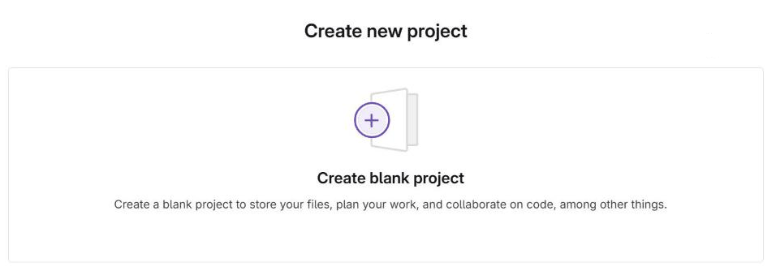
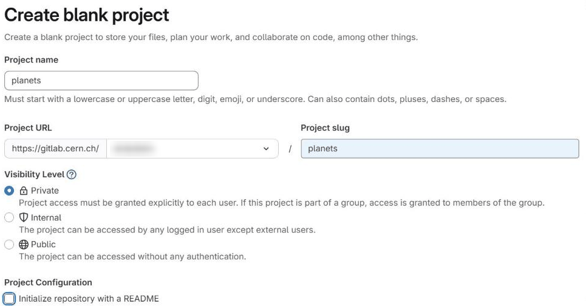
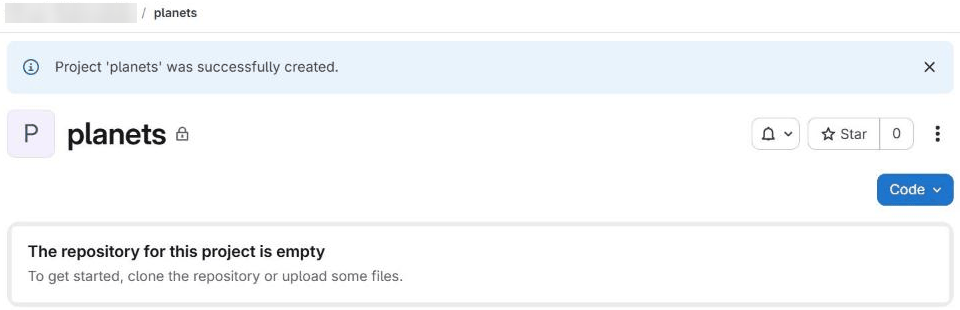
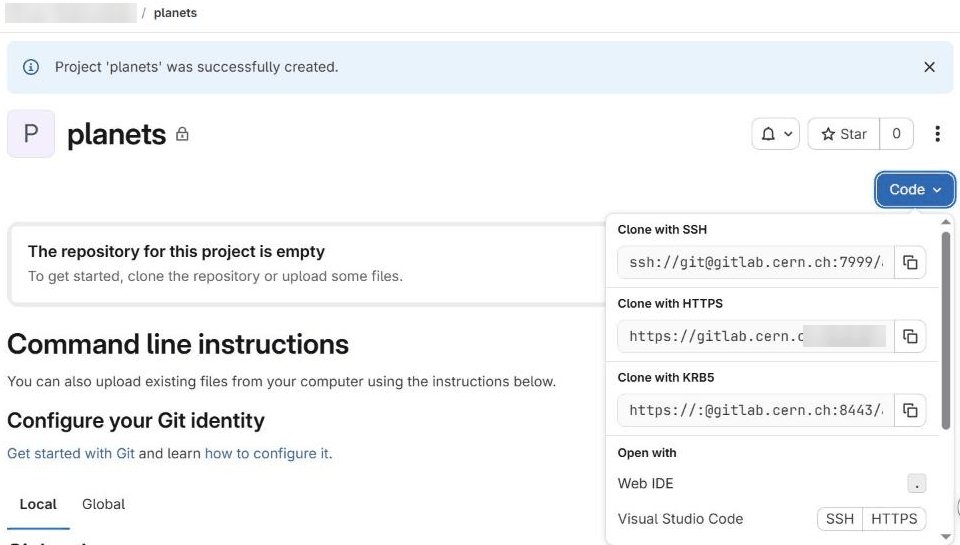
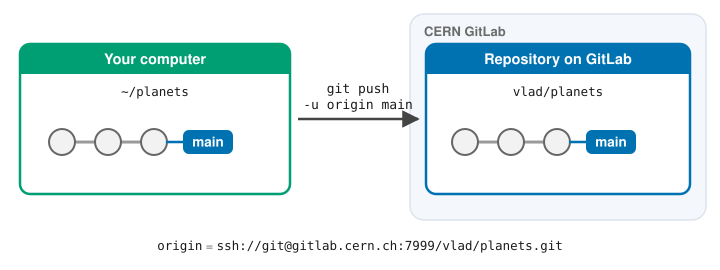

Remotes in CERN GitLab
Learning Objectives
Explain what remote repositories are and why they are useful.
Push to or pull from a remote repository.
Prerequisites
An SSH key added to your CERN GitLab account, see here for instructions.
You can test if this is working by running
ssh git@gitlab.cern.ch -T -p 7999. Everything is working correctly if the output of the command is:
Welcome to GitLab, Santa Claus!
Version control really comes into its own when we begin to collaborate with other people. We already have most of the machinery we need to do this; the only thing missing is to copy changes from one repository to another.
Systems like Git allow us to move work between any two repositories. In practice, though, it’s easiest to use one copy as a central hub, and to keep it on the web rather than on someone’s laptop. Most programmers use hosting services like GitHub, BitBucket or GitLab to hold those central copies. All of these services are the same from the perspective of the Git command line, however each provider’s website offers slightly different features. In this lesson we will use CERN’s instance of GitLab. This is similar to the public GitLab instance, except that it is hosted by CERN and integrated with other CERN services: for example, you log in with your CERN account.
Let’s start by sharing the changes we’ve made to our current project with the world. Log in to CERN GitLab, then use the New project button (or the + menu) and choose to create a blank project:

Name your repository “planets”, choose its visibility level, and then click Create project at the bottom of the form:

Start with an empty repository
Make sure the option Initialize repository with a README is not ticked. We already have a repository with some history on our own computer, so we want the one on GitLab to be completely empty. If GitLab creates a README file for us, the remote will contain a commit that our local repository does not have, and our first push will be rejected.
Note the visibility level of the project. Every CERN user can create a private repository, meaning its access can be restricted to the people you choose; you can also make it visible to all CERN users, or public to the whole world. Private repositories are very useful when collaborating on a paper or an analysis that is not yet public. (External services such as GitHub also offer free private repositories nowadays; a key advantage of CERN GitLab is its integration with CERN accounts and services.)
As soon as the repository is created, GitLab displays its page. Our local
repository still contains our earlier work on mars.txt, but the repository on
CERN GitLab is empty, so GitLab shows instructions on how to fill it:

What happened on the server?
Creating the project is roughly equivalent to running the following on CERN’s servers:
$ mkdir planets
$ cd planets
$ git init --bare
A bare repository contains only the history (what would normally be inside
the .git directory), without a working directory of files that someone
could edit. That is all a shared repository needs: nobody works in it
directly, people only push to it and pull from it.
The next step is to connect the two repositories. We do this by making the GitLab repository a remote for the local repository. The home page of the repository on GitLab includes the string we need to identify it:

Click the Code button: GitLab offers several URLs for the same repository,
one for each way of connecting (SSH, HTTPS and, at CERN, KRB5 for Kerberos).
Copy the one labelled Clone with SSH, go into the local planets
repository, and run this command:
$ git remote add origin ssh://git@gitlab.cern.ch:7999/vlad/planets.git
Make sure to use the URL for your repository rather than Vlad’s: the only
difference should be your username instead of vlad.
Using HTTPS instead of SSH?
In this lesson we connect to GitLab with SSH, because once your key is set up
you never need to type a password. Repositories can also be reached over
HTTPS (the Clone with HTTPS URL, such as
https://gitlab.cern.ch/vlad/planets.git), which can be useful where SSH is
blocked, for example on some networks or computing clusters.
With HTTPS, Git asks for a username and password whenever it talks to the server. However, you cannot use your normal account password for this: on CERN GitLab, where you log in through CERN’s single sign-on, and on GitHub, which stopped accepting passwords for Git in 2021, you need a personal access token instead. A token is a long random string that works like a password, but only for the permissions you choose and until the date you set:
On GitLab, create one under your avatar > Edit profile > Access > Personal access tokens, with the
read_repositoryandwrite_repositoryscopes (see the GitLab documentation).On GitHub, see the GitHub documentation.
When Git asks for your password, paste the token. Copy it somewhere safe when you create it, as the platform shows it only once, and treat it like a password: never commit it to a repository. To avoid typing it every time, a credential helper such as Git Credential Manager (included with Git for Windows) can store it securely for you.
At CERN there is a third option: on machines where you have a Kerberos ticket,
such as lxplus, the Clone with KRB5 URL (of the form
https://:@gitlab.cern.ch:8443/vlad/planets.git) lets Git use your CERN login
without any password or token. If you don’t have a valid ticket (you can
check with klist), get one with kinit username@CERN.CH first.
In short:
Method |
URL starts with |
What you need |
Best for |
|---|---|---|---|
SSH |
|
an SSH key added to your account |
your own computers (used in this lesson) |
HTTPS |
|
a personal access token |
networks where SSH is blocked |
KRB5 |
|
a Kerberos ticket (from |
lxplus and other CERN machines |
We can check that the command has worked by running git remote -v:
$ git remote -v
origin ssh://git@gitlab.cern.ch:7999/vlad/planets.git (fetch)
origin ssh://git@gitlab.cern.ch:7999/vlad/planets.git (push)
The name origin is a local nickname for your remote repository. We could use
something else if we wanted to, but origin is by far the most common choice.
Once the nickname origin is set up, this command will push the changes from
our local main branch to the repository on GitLab:
$ git push -u origin main
Enumerating objects: 9, done.
Counting objects: 100% (9/9), done.
Delta compression using up to 4 threads
Compressing objects: 100% (6/6), done.
Writing objects: 100% (9/9), 821 bytes | 821.00 KiB/s, done.
Total 9 (delta 2), reused 0 (delta 0), pack-reused 0
To ssh://gitlab.cern.ch:7999/vlad/planets.git
* [new branch] main -> main
branch 'main' set up to track 'origin/main'.
Our local and remote repositories are now in this state:

What is the -u for?
-u (short for --set-upstream) links our local main branch to the main
branch on origin, so that Git remembers where this branch is pushed to and
pulled from. The last line of the output confirms it:
branch 'main' set up to track 'origin/main'.
We only need -u the first time we push a branch. After that:
git pushandgit pullwork without any arguments, because Git already knows which remote and branch to use;git statustells us how our branch compares with the one on GitLab, for exampleYour branch is ahead of 'origin/main' by 1 commit, which is a reminder that we have commits we haven’t pushed yet.
In the rest of this lesson we sometimes still write git push origin main in
full. This does exactly the same as git push, it just spells out where the
changes are going.
We can pull changes from the remote repository to the local one as well:
$ git pull origin main
From ssh://gitlab.cern.ch:7999/vlad/planets
* branch main -> FETCH_HEAD
Already up to date.
Pulling has no effect in this case because the two repositories are already synchronised. If someone else had pushed some changes to the repository on GitLab, though, this command would download them to our local repository.
GitLab GUI
Browse to your planets repository on GitLab.
In the Code menu on the left, select Commits.
Hover over, and click on, the buttons to the right of each commit. What information can you gather/explore from these buttons? How would you get that same information in the shell?
Solution
The button with the picture of a clipboard copies the full
identifier of the commit to the clipboard. In the shell, git log will show
you the full commit identifier for each commit.
When you click on the commit message, you’ll see all of the changes that were
made in that particular commit. Green shaded lines indicate additions and red
ones removals. In the shell we can do the same thing with git diff. In
particular, git diff ID1..ID2 where ID1 and ID2 are commit identifiers
(e.g. git diff a3bf1e5..041e637) will show the differences between those
two commits.
The “Browse files” button lets you view all of the files in the repository at the
time of that commit. To do this in the shell, we can switch the whole
repository to that point in time with git switch --detach ID,
where ID is the identifier of the commit we want to look at (see the
“detached HEAD” panel in Exploring History for what this
does). If we do this, we need to remember to go back to the latest version
afterwards with git switch main!
GitLab Timestamp
Create a remote repository on GitLab. Push the contents of your local repository to the remote. Make changes to your local repository and push these changes. Go to the repo you just created on GitLab and check the timestamps of the files. How does GitLab record times, and why?
Solution
GitLab displays timestamps in a human readable relative format (i.e. “22 hours ago” or “three weeks ago”). However, if you hover over the timestamp, you can see the exact time at which the last change to the file occurred.
Push vs. Commit
In this lesson, we introduced the “git push” command. How is “git push” different from “git commit”?
Solution
When we push changes, we’re interacting with a remote repository to update it with the changes we’ve made locally (often this corresponds to sharing the changes we’ve made with others). Commit only updates your local repository.
Fixing Remote Settings
It happens quite often in practice that you made a typo in the remote URL. This exercise is about how to fix this kind of issues. First start by adding a remote with an invalid URL:
git remote add broken https://gitlab.cern.ch/this/url/is/invalid
Do you get an error when adding the remote? Can you think of a
command that would make it obvious that your remote URL was not
valid? Can you figure out how to fix the URL (tip: use git remote -h)? Don’t forget to clean up and remove this remote once you are
done with this exercise.
Solution
We don’t see any error message when we add the remote (adding the remote tells
git about it, but doesn’t try to use it yet). As soon as we try to use
it, for example with git push broken main, we’ll
see an error message. The command git remote set-url
allows us to change the remote’s URL to fix it.
Key Points
A local Git repository can be connected to one or more remote repositories.
Use the SSH protocol to connect to remote repositories.
git pushcopies changes from a local repository to a remote repository.git pullcopies changes from a remote repository to a local repository.
CC BY 4.0 - Based on git-novice © 2016–2017 Software Carpentry Foundation